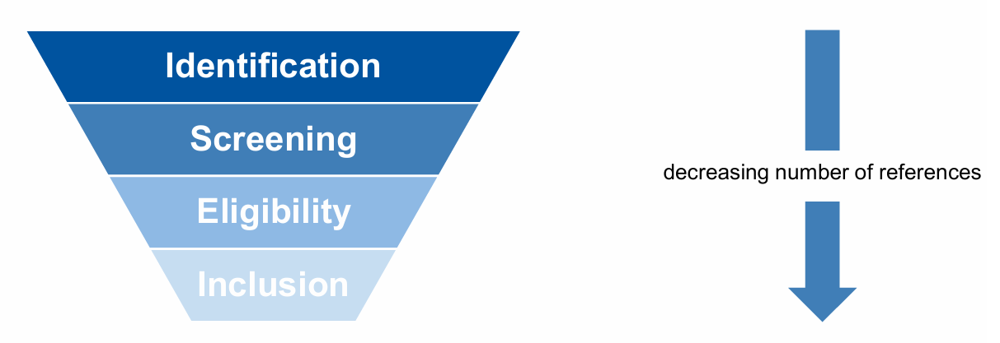

My Work
Here are some of the projects I've worked on, both personal and professional.
A CFD-based Workflow for Multi-Objective Optimization of Inlet Geometry Under Flashback and NOx Emission Constraints
This thesis develops a CFD-based workflow for the optimization of hydrogen burner inlet geometries with respect to nitrogen oxide (NOx) emissions and flashback risk. The focus is on establishing a computationally efficient and automated methodology that enables the systematic exploration of design trade-offs under fixed operating conditions and constraints imposed by additive manufacturing.
The workflow integrates steady-state Reynolds-Averaged Navier–Stokes (RANS) simulations into a multi-objective optimization framework. A two-stage simulation strategy is employed. In the first step, a non-reactive three-dimensional inlet simulation is used to resolve the upstream mixing field. The resulting outlet data are then mapped onto a two-dimensional reactive outlet simulation, in which hydrogen combustion is modeled using detailed chemical kinetics.
This reactive simulation enables the direct evaluation of thermal NOx formation and flame stabilization behavior. Flashback risk is assessed using a velocity-gradient-based indicator evaluated at near-wall locations, derived from established boundary-layer flashback criteria.
The complete methodology is embedded into an automated optimization loop coupling OpenFOAM, parametric geometry generation, and the Dakota framework. Due to the multi-objective formulation and the presence of discrete design variables, a multi-objective genetic algorithm (MOGA) is employed to approximate the Pareto-optimal set of inlet geometries.
The resulting optimization studies demonstrate that the developed workflow is capable of resolving the trade-off between NOx emissions, flashback risk, and pressure loss within the limitations of steady-state RANS modeling. The proposed framework provides a modular basis for CFD-driven inlet design and can be extended toward higher-fidelity turbulence modeling and surrogate-assisted optimization strategies in future work.
Download Bachelor ThesisSystematic Literature Review: Integration of Artificial Intelligence in CFD Simulations
As part of a student team, I conducted a systematic literature review to assess the current state of research and identify key gaps in the integration of artificial intelligence within computational fluid dynamics (CFD) workflows. My individual focus was on AI applications in turbulence modeling and design optimization using surrogate models. Through this work, I analyzed the role, current capabilities, and future potential of AI-driven transformation in engineering applications involving fluid simulations.
